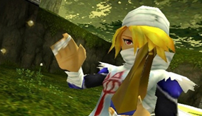
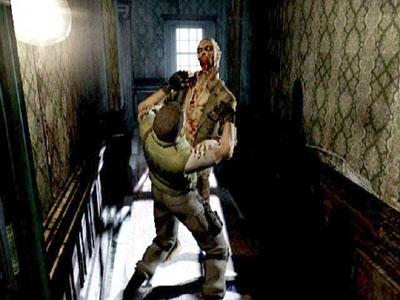
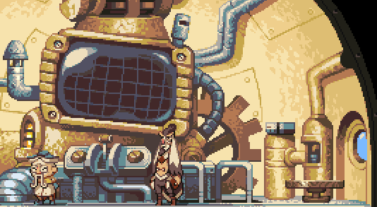
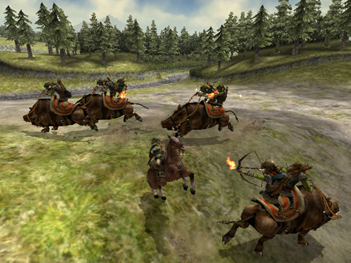
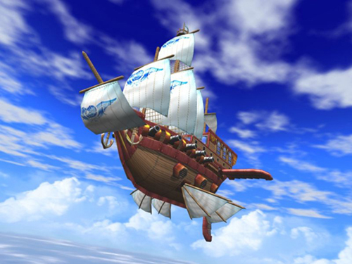
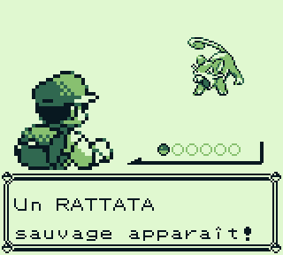
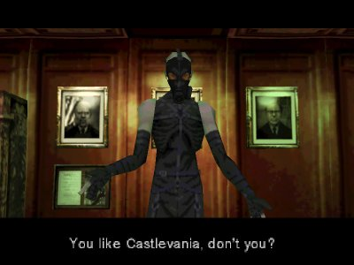
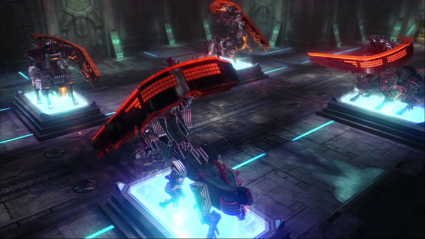

Musique et gameplay
La musique de jeu vidéo est confrontée aux mêmes problématiques que d'autres genres, comme la musique de film. Elle conditionne la façon dont le joueur va percevoir les différents éléments du jeu et aussi la façon dont il s'en souviendra. En créant une ambiance, elle détermine la façon dont le joueur va ressentir une scène ou un moment de jeu. Elle permet par ailleurs au joueur d'identifier immédiatement les différents éléments du jeu : une musique est attachée à un lieu, à un personnage (on parle alors de thème), à une scène, à une situation de la même façon qu'un bruitage est associé à une action.

Mais le film, contrairement au jeu vidéo, est un support « invariable » : un compositeur de musiques de films connaît à l'avance la durée et l'enchaînement des scènes telles qu'elles apparaitront au spectateur. A l'inverse, un compositeur de musique de jeux ne peut pas toujours le savoir : à l'exception de certains passages purement cinématiques, la durée et l'enchaînement des différents moments de jeu dépendent du joueur et de sa façon de parcourir le jeu. La musique de jeu est donc confrontée à des problématiques supplémentaires par rapport à la musique de film : cette musique doit-elle « boucler » et si oui comment ? Comment la musique doit-elle réagir au comportement du joueur ? Comment éviter l'impression de répétitivité due à une écoute prolongée ? Comment faire intervenir les différentes musiques aux moments adéquats sans pouvoir les prévoir systématiquement ? Comment réaliser des transitions musicales alors que c'est le joueur qui dirige l'action ?
Cet article vise à ébaucher un début de réflexion sur les fonctions et les utilisations possibles de la musique dans le jeu vidéo, pour essayer de comprendre ce qui en fait la spécificité, par rapport à la musique de films notamment, et comment l'utiliser non pas en simple accompagnement du gameplay mais comme composante à part entière de celui-ci. N'étant pas moi-même compositeur, je m'intéresserai essentiellement ici à l'utilisation de la musique et à sa construction en rapport avec le gameplay, et non à la composition. Je citerai essentiellement ici des exemples tirés du RPG (et particulièrement des Zelda), tout simplement parce que c'est le genre que je connais le mieux (ceux qui ont lu mes articles précédents connaissent mes névroses c: ).
I. Les fonctions de la musique dans le jeu vidéo
1. Tension
La musique de jeu conditionne l'ambiance d'un jeu et plus particulièrement son rythme. De la même façon que le level design conditionne le rythme de jeu en s'étrécissant ou en s'ouvrant, la musique détermine la tension, le stress (au sens le plus positif du terme) ressentis par le joueur.
Il est très classique que le boss final d'un jeu passe par plusieurs formes de plus en plus impressionnantes (avec parfois une forme finale extrêmement faible). Cette montée en puissance se traduit par le gameplay (les statistiques et les points de vie du boss changent, ses attaques et son comportement aussi) et par le graphisme (les différentes formes sont de plus en plus grandes, de plus en plus impressionnantes). Mais fondamentalement, c'est la musique qui va véritablement créer cette impression de crescendo, à mesure que les thèmes successifs deviennent de plus en plus rapides, complexes, intenses. Essayez donc de battre le boss de fin d'un Final Fantasy, d'un Skies of Arcadia ou d'un Grandia en coupant le son : la tension dramatique est immédiatement anéantie.
La musique conditionne par ailleurs la perception que le joueur a de son environnement. Elle définit comment le joueur va ressentir le lieu et la phase de la gameplay dans lesquels il doit évoluer.

La plupart du temps, les lieux où le joueur est en sûreté bénéficient d'un accompagnement musical serein, rassurant : dans un Resident Evil, quand un joueur rentre dans une safe room, un (très joli) thème au rythme plus régulier, plus calme l'informe immédiatement qu'il est en sécurité. A l'inverse, dans les endroits où le joueur peut être attaqué, la musique repasse sur des clusters disonnants et des nappes sourdes, autrement plus angoissants. Le game designer peut donc fournir une information au joueur sans avoir à la lui donner explicitement : plutôt que d'écrire à chaque entrée de porte « Safe room » ou « Attention danger ! », ce qui tuerait l'immersion, il fait directement ressentir au joueur cette information.
Qui plus est, si le game designer peut se servir de la musique pour informer le joueur, le guider, il peut donc s'en servir pour brouiller les pistes et le piéger.
Resident Evil nous fournit à cet effet un autre exemple, caractéristique des jeux qui cherchent à surprendre ou à faire peur au joueur. Les différentes salles où le joueur doit résoudre des énigmes constituent un ralentissement du rythme de jeu, car elles sont synonymes d'une absence de combats. Il se pourrait que le joueur en profiter pour respirer un bon coup. Ce n'est pas forcément une mauvaise idée pour varier le rythme, mais si ça dure trop longtemps, le joueur trop confiant ne sera plus dans l'état d'esprit adéquat pour se laisser effrayer. Pour compenser ceci, les développeurs de Capcom ont choisi d'accompagner ces séquences par l'une des musiques les plus stressantes de toute la bande-son. La baisse de rythme induite par le gameplay est contrebalancée par une utilisation judicieuse de la bande-son, afin que le jeu maintienne chez le joueur un niveau de tension minimal.
2. Les transitions musicales
Les transitions musicales dans un jeu constituent des modules et à ce titre font partie des éléments de level design : elles doivent donc s'adapter au type de gameplay.
Prenons l'exemple de la série des Zelda, notamment à partir d'Ocarina of Time. Les combats ne sont pas distincts de l'exploration : Link traverse une plaine, rencontre un ennemi et commence à combattre directement, sans changement d'interface. Pour accompagner l'entrée en combat, la transition est progressive, la musique de la plaine est progressivement « recouverte » par la musique des combats (qui évoque d'ailleurs en général beaucoup plus une tension nerveuse qu'un duel épique).
Prenons maintenant l'exemple d'une autre série, les Final Fantasy. Dans la plupart des opus, les combats et l'exploration sont très nettement séparés. Le joueur se déplace sur la carte, sans interface, jusqu'à tomber sur un ennemi. Là, rupture nette : l'écran subit un effet visuel très vif (il vole en éclats, par exemple) accompagné d'un gros swoooosh, les ennemis apparaissent, l'interface change du tout au tout (des jauges et des chiffres apparaissent un peu partout), le style graphique aussi (passage d'une caméra fixe à une caméra mobile, de 3D pré-calculée à 3D temps réel, de Super Deformed à réaliste, changement d'angle de vue, etc.). En réponse à cette transition, la musique change du tout au tout : on passe du thème de donjon mystérieux et éthéré au thème de combat upbeat et dramatique.
Dans les deux cas, la transition musicale s'effectue de manière cohérente avec le reste du jeu, elle respecte le gameplay. Elle peut être brutale (changement de piste et effet sonore) ou très douce (modulation, changement de rythme), mais dans tous les cas, elle doit s'intégrer au reste du gameplay.

Un autre exemple d'utilisation de la musique comme module entre deux phases de jeux : dans Owlboy, lorsque le personnage principal, Otus, marche sur une île ou sur la terre ferme, l'exploration est accompagné d'une version 8-bit du thème principal du jeu. Dès qu'Otus s'envole, la version orchestrale du thème est superposée à la piste 8-bit. Le changement de genre musical permet de passer sans à-coup d'une phase de gameplay à une autre et d'indiquer au joueur qu'il doit changer de façon de jouer.
A l'inverse, une transition ratée peut détruire l'immersion dans le jeu. C'est notamment le risque avec une transition entre musique et silence.
Je citerai ici l'exemple malheureux de Dragon Age : Origins. Dans un RPG occidental, l'exploration des villes prend en général beaucoup de temps, la musique qui accompagne ces lieux est donc essentielle pour immerger le joueur dans l'univers et ne pas le lasser. Les développeurs ont choisi, plutôt que de laisser tourner le thème musical d'une ville en boucle, d'alterner phases de musique et phase de silence (ou de quasi-silence). Si cette technique permet de « rallonger » la durée des pistes sonores pour éviter la lassitude, elle est à l'origine d'une rupture de l'immersion. Quand la musique reprend après un long silence, la transition trop brutale trahit le changement et le joueur pense immédiatement « Tiens, ils ont remis la musique ? ». Cette utilisation de l'accompagnement musical ne fait pas sens, car il y a une transition musicale qui ne correspond à aucune transition du point de vue du graphisme ou du gameplay.
3. Musique et temps
Si la musique permet de créer une tension, c'est essentiellement parce qu'elle permet au joueur de mesurer plus ou moins clairement la proximité du danger. Ceci peut servir à créer une ambiance, mais aussi à élaborer des solutions de game design.
Prenons ici l'exemple des donjons d'Ocarina of Time : à plusieurs reprises, le joueur doit activer un interrupteur, puis effectuer une action en temps limitée avant que l'interrupteur ne s'éteigne. Comment faire comprendre ce principe de jeu au joueur sans passer par de fastidieuses explications ? On pourrait proposer d'utiliser un chronomètre, qui indiquerait le temps restant pour indiquer l'épreuve. Mais Nintendo a su se servir de l'accompagnement musical pour se montrer plus subtil.
Quand le joueur active un tel interrupteur, un tictac (semblable à celui d'une bombe par exemple) se fait entendre. Instinctivement, le joueur sait qu'il doit faire vite. De plus, quand le compte à rebours s'approche du zéro, ce bruitage s'accélère, ce qui permet au joueur d'évaluer le temps qui lui reste. Ceci permet d'éviter l'affichage d'un chronomètre qui nuit à l'immersion et de ne donner au joueur qu'une idée du temps qui lui reste, pour faire grimper un peu plus l'adrénaline chez lui.

C'est le même principe utilisé dans un autre opus de la série, Twilight Princess. Dans l'un des donjons, le joueur doit ramener du fond du donjon un orbe lumineux. Mais quand il retire l'orbe en question de son socle, une main géante se lance à sa poursuite pour le récupérer et le joueur doit réussir à fuir, sans se faire attraper, jusqu'à l'entrée du donjon. Dans la mesure où le joueur est occupé à fuir et à désactiver les mécanismes qui bloquent son passage, il ne peut pas forcément regarder où est la main qui le suit et savoir combien il lui reste de temps. L'accompagnement musical permet de répondre à ce problème : une musique du type de celle des Dents de la mer se superpose au thème ambiant à mesure que la main se rapproche. Quand la musique change, le joueur sent la tension augmenter et sait qu'il doit s'apprêter à se battre et non plus s'occuper de l'orbe. C'est un mécanisme qui permet de développer le gameplay et la narration, sans briser l'immersion comme pourrait le faire, disons, l'utilisation d'un radar dans un coin de l'écran.
La musique peut donc servir le gameplay, parce qu'elle est l'une des seules façons, autre que spatiale, de mesurer un temps, une durée. Les variations d'une mélodie permettent au game designer de faire percevoir au joueur l'écoulement du temps. C'est pour cette raison, même si c'est beaucoup plus discret, que la répétition d'une même musique, par exemple dans un donjon, donne au joueur une sensation d'immersion : intuitivement, il mesure le temps qu'il y a passé, par exemple en se rendant compte qu'il commence à connaître le thème musical de l'endroit.
II. La musique, composante à part entière du gameplay
1. Feedback immédiat
Le joueur peut donc être influencé par la musique, y réagir, de la façon la plus simple (avoir peur) à la plus complexe (évaluer la proximité d'un danger). Mais le joueur n'est pas uniquement passif vis-à-vis de la musique, il peut aussi agir dessus. De la même manière qu'un joueur aime à agir sur son environnement ludique au travers du gameplay (il détruit un objet, pousse un bloc, etc.) ou du graphisme (il change de lieu, passe du jour à la nuit, etc.), il aime à interagir avec son environnement musical.
L'immediate feedback, ou feedback immédiat en est sans doute l'exemple le plus flagrant. L'idée est de récompenser immédiatement toute action du joueur par une réaction à l'écran : dès que le joueur appuie sur un bouton, il se passe quelque chose.
Dans un Mario, dès que le joueur saute ou frappe, le tout est accompagné d'un bruitage adéquat. Dans un Sonic, dès que le joueur collecte un anneau, il entend un bruitage caractéristique. Ceci augmente considérablement le plaisir de jeu : imaginez donc jouer à un Zelda où vous ramasseriez des rubis sans le moindre bruitage !
2. L'environnement musical
Mais l'interaction joueur-musique ne se limite pas qu'à des exemples aussi simples. La musique de jeu vidéo, si elle partage des points communs avec la musique de film, possède une caractéristique essentielle qui l'en distingue : elle est intégrée au gameplay. L'une des choses qu'un joueur recherche dans un jeu, c'est la possibilité de transformer son environnement et donc aussi son environnement musical.
Permettez-moi de citer une fois de plus l'exemple de la série des Zelda. Dans les Bois Perdus d'Ocarina of Time, Link doit s'orienter en écoutant la musique qu'il entend. La musique sert d'élément de gameplay, elle guide le joueur. Inversement, le joueur transforme la musique du lieu, comme n'importe quel autre élément du jeu, en se déplaçant : selon la direction qu'il choisit d'emprunter, il module le volume de la musique. Un autre exemple, à la fin du jeu, est l'ascension dans la tour centrale du donjon final (reprise par ailleurs dans Twilight Princess). Lorsque le joueur avance, il entend la musique devenir plus forte (voire se transformer dans Twilight Princess) ce qui lui annonce qu'il se rapproche de la confrontation finale. Mais s'il recule, la musique redevient plus douce. Ainsi, c'est le joueur qui contrôle la musique, qui choisit comment il construit la tension dramatique de cette ascension qui n'est pas scriptée : la musique obéit à ses pas.
Dans The Wind Waker, les affrontements sont ponctués par de courtes notes de violon, qui se font entendre à chaque coup. Ceci donne la possibilité au joueur de rythmer le combat, non seulement du point de vue ludique, mais aussi du point de vue musical. Chaque note se fait plus aiguë que la précédente, ce qui fait que la tension augmente avec chaque coup et c'est le joueur lui-même qui contrôle cette progression de la tension. Twilight Princess reprend — encore une fois — le même principe et l'affine. Dans le monde du crépuscule, les notes de violon qui dynamisaient le combat sont remplacées par des sons — ou plutôt des bruits — très désagréables et passablement angoissants. Le contact des monstres en devient plus stressant et incite à plus d'hésitation chez le joueur : ce changement sonore induit d'une certaine façon un changement de rythme et donc de gameplay. Poussé plus loin, c'est ce principe qui est à l'origine du concept de l'étrange Rez : le joueur, en détruisant les ennemis et les différents éléments du décor, produit des sons qui viennent un à un s'intégrer à la bande-son du jeu, initialement composée d'une simple pulsation. Le joueur crée son environnement sonore par le rythme de son action.

Dans Skies of Arcadia, c'est dans les combats contre les boss que les développeurs ont réussi à intégrer ce principe. Lors de ces affrontements, la musique peut changer selon que le joueur est en position de force ou de faiblesse. Le combat commence avec une musique de combat relativement neutre et passe à un thème sombre et discordant si les points de vie de l'équipe du joueur descendent trop bas. A l'inverse, si les points de vie du boss diminuent suffisamment, la musique se change en un thème de victoire épique. Les transitions étant finement réalisées, ceci n'est pas forcément évident lors d'une première partie. Cette idée, réutilisée dans The Last Remnant, permet à la musique de s'intégrer en tant que punition ou en tant que récompense selon les cas. Faire changer l'environnement sonore devient d'une certaine façon le but du joueur, la musique devient un élément que le joueur peut modifier.
3. Le diégétique et l'extradiégétique
Le jeu vidéo, comme le cinéma, a l'occasion de jouer sur deux plans : le réel dit diégétique, c'est-à-dire l'univers du jeu (ou du film) tel qu'il est perçu par ses personnages, et le réel dit extradiégétique, c'est-à-dire tel qu'il est perçu par le joueur (ou le spectateur).
Dans la plupart des cas, la musique de film ou de jeu est un élément extradiégétique : les personnages n'entendent pas la bande-son qui accompagne la scène. Une musique entendue par les personnages, par exemple s'ils assistent à un concert ou s'ils sont à côté d'un poste de radio, est à l'inverse un élément diégétique.
Le compositeur peut jouer avec cette frontière entre musiques diégétique et extradiégétiques pour créer une atmosphère particulière ou articuler le gameplay et la musique. La musique des Bois Perdus d'Ocarina of Time est-elle véritablement diégétique ? Link est censé entendre la mélodie jouée par son amie Saria, mais dans ce cas, d'où viennent les instruments qui l'accompagnent ? Comment pourrait-il l'entendre de si loin ?
Reprenons l'exemple de l'ascension de la tour à la fin du jeu. Link entend Ganondorf, qui joue de l'orgue au sommet de la tour. Il est ici amusant de constater que la musique qui guide Link vers le combat final n'est autre que le thème musical de Ganondorf. Comment un personnage pourrait-il avoir conscience de son propre thème ? Il en va de même pour Saria ou, pour changer de jeu, pour Cloud. Dans Final Fantasy VII, lorsqu'il joue de la flûte pour réveiller la Forêt Endormie, c'est l'un des thèmes principaux du jeu qu'il entonne, alors qu'il ne devrait même pas en avoir conscience.
Conclusion
La musique de jeu, même si elle partage nombre de points communs avec la musique de film, trouve sa spécificité dans l'interaction qui existe entre elle et le joueur. Au même titre que les autres composantes du jeu, elle fait partie intégrante du gameplay et doit être réfléchie en tant que telle : ce n'est pas pour rien que beaucoup de grands jeux sont aussi restés mémorables pour leurs musiques.
Si nous avons commencé à discuter de la question de l'utilisation des musiques, on peut aussi légitimement s'interroger sur les contraintes qui portent sur la nature même des morceaux utilisés. Certains jeux choisissent d'explorer une large palette de genres et de registres, d'autres au contraire restreignent jusqu'au choix des instruments utilisés. Certains choisissent de privilégier des thèmes musicaux forts et reconnaissables, d'autres préfèrent des compositions d'ambiance plus discrètes et parfois à la limite du bruitage, mais qui laissent plus respirer les voix des personnages. J'espère pouvoir aborder (ou demander à quelqu'un d'autre de le faire) ces questions dans un prochain article. En attendant, vos critiques, remarques et suggestions (musicales notamment) sont plus que bienvenues !
Bonus
Pour conclure cet article, la rédaction des Forges a souhaité se faire un petit plaisir et vous faire partager certains des morceaux de la musique de jeux vidéo qui l'ont marquée.
La sélection de Thomas :
- Dearly Beloved, Kingdom Hearts, Yoko Shimomura
Le thème de l'écran-titre de Kingdom Heart premier du nom est pour moi l'une des musiques les plus marquantes du jeu vidéo. Simplement jouée au piano, accompagnant un menu sobre et élégant, c'est la musique apaisante qui précède l'enchaînement de combats, qu'on prend le temps d'écouter au moins une fois avant de partir à l'aventure. L'entendre évoque instantanément la licence et les heures de jeux accumulées sur les divers titres. - Main Menu Theme, Age of Empires II: The Age of Kings, Stephen Rippy
Encore une musique de menu, c'est décidément une habitude. Cette fois ci, c'est un thème épique, entraînant, qui évoque l'époque médiévale, thème central de The Age of Kings. C'est également l'annonce de féroces combats, mais cette fois-ci l'attente est plus fébrile que sereine: on a envie d'en découdre, là, maintenant, et d'assiéger du château à la tête d'une armée de cavaliers en armure. - Route 24/25 Theme, Pokémon Rouge et Pokémon Bleu, Junichi Masuda
Ce dernier choix est guidé par la nostalgie principalement. Pokémon, c'est ma découverte des jeux japonais, c'est ma Game Boy reçue pour mon anniversaire (pensez-vous, une console qu'on peut emmener partout alors qu'on ne connaissait que la grosse tour dans la chambre des parents !), c'est la découverte des RPG. Et le thème de la route 24, c'est Pokémon résumé en 10 minutes: une musique entraînante, un parcours semé d'embûches et l'envie d'aller voir ce qu'il y a au bout.

La sélection d'Antoine :
- Gallantry, Raiden, Akira Sato
Ce thème est la musique du premier niveau de Raiden (une série de shoot them up des années 90). C'est une musique 16-bit entrainante qui illustre ce que le jeu vidéo a pu apporter à la musique. A cause de limitations techniques, les compositeurs ont du ruser pour obtenir des sons intéressants et ont donné naissance sans le savoir à la scène chiptune qui est si riche aujourd'hui. - Landmass, WipEout 2097, The Future Sound of London
La série des WipEout (des jeux de course à la F-Zero pour hardcore gamers) a pour habitude de constituer ses bandes sons en faisant travailler des artistes à la pointe de la scène electro anglaise (en tout cas c'était le cas à l'époque). Cette piste et le reste de la bande son m'ont fait réaliser qu'il pouvait y avoir des échanges fructueux entre le jeu vidéo et des artistes qui ne sont pas des compositeurs dédiés. Accessoirement, c'était aussi un de mes premiers contacts avec la musique électronique de bonne qualité et The Future Sound of London fait toujours partie de mes groupes préférés. - Mantis' Hymn, Metal Gear Solid, KCE Japan Sound
Je suis désolé d'avoir choisi trois jeux des années 90, je devais être très émotif dans mon enfance. Je crois qu'avant cette piste je ne faisais jamais attention à la musique dans les jeux sauf quand elle était très entrainante ou exaspérante. Il s'agit d'un morceau inquiétant qui exploite habilement le chipset sonore de la PSX pour créer des glissandi dans les chœurs, chouette ambiance. J'ai remarqué l'existence de cette musique quand Snake a explicitement fait remarquer « Tiens !? La musique s'est arrêtée. » quelques minutes avant l'affrontement contre le boss de la zone.

La sélection de Pierre :
- Blinded By Light, Final Fantasy XIII, Masashi Hamauzu
Essentiellement, mes choix sont dictés par mon amour des musiques « à thème ». Le thème des combats de cet opus m'a marqué par son dynamisme, sa résistance hors-norme à la répétition (alors que la boucle est extrêmement courte) et surtout sa capacité à associer les dimensions artificielle (batterie, guitare électrique, etc.) et organique (violons, harpes, etc.) qui font toute la direction artistique du jeu. - Mullen, Grandia, Noriyuki Iwadare
Grandia est une œuvre immense, émouvante, adulte, véritable transposition d'un Miyazaki en jeu vidéo. Et sa bande-son n'y est pas étrangère. Le thème du personnage de Mullen en est l'exemple le plus frappant : en dix secondes, on sent tout le conflit intérieur de ce personnage profondément déchiré entre sa noblesse, son courage et son arrogance, sa soif de pouvoir. Le thème impérial par excellence. - Heavenly Flight, Dragon Quest VIII : l'Odyssée du Roi Maudit, Koichi Sugiyama
Antoine râlera tant qu'il voudra, je n'en démordrai pas : la bande-son des Dragon Quest est remarquable. Cette musique, qu'on entend sur la carte du monde lorsqu'on la survole à dos d'oiseau, traduit tout le sens du voyage qui anime Dragon Quest VIII de bout en bout. Personnellement, c'est grâce à elle que je me suis littéralement senti saisi chaque fois que je voyageais dans cet univers.

Ajouter un commentaire
Commentaires

Bon j'avoue, je découvre l'article tard, mais pour répondre à ceux qui demandent si il existe autre chose que la boucle évolutive je vous conseille de regarder le process du son dans Dead Space, il est géré par un plug-in appelé le fear meter qui calcule le taux de peur perçu par le personnage principal et le retransmet en musique, il y as 4 couches de musique, quand le personnage est confiant, seule la première couche joue à faible niveau, et quand il est au maximum de la peur, toutes les couches forment une cacophonie et ont le volume au maximum de la musique.
Dommage de ne pas avoir évoqué Mother 3, où le rythme de la musique influence les combos.
Article sympa ! Ça fait du bien de voir des gens hors musiciens mettre en avant la musique en tant que partie intégrante du gameplay et du game design ! Car même si des séries de jeux tel que zelda, mario ou autre intègrent très bien les éléments cités, il n'en va pas de même pour une bonne partie des autres jeux …
Il y a aussi le jeu "Conker's Bad Fur Day" sur N64 où il y a un boss musical, The Great Mighty Poo. C'est une musique d'opéra où le boss chante, et c'est justement quand il chante qu'il faut lui envoyer un rouleau de papier toilette dans la bouche. En plus du fait que la musique accélère au fur et à mesure qu'on le blesse, et que c'est justement la chanson qui fait qu'une vitre se brise pour accéder à ce qui tuera le boss.
Je trouve qu'ils ont réussi à faire une association génial entre gameplay et musique ^^.
Je plussoie Gaetz. Parler de la musique dans une problématique de GD ça implique de chercher une solution pour la rendre interactive. Trop de jeux se contentent justement de la cantonner à l'"illustration"…

T'exagères un peu, monsieur anonyme. Il me semble que l'article a une vocation pratique — mettre en lumière un certain nombre de méthodes pour intégrer la musique à un jeu vidéo — plutôt que théorique — dire que la musique c'est important.
La musique, partie intégrante du gameplay dans un jeu vidéo… C'est pas transcendant non plus comme conclusion. Ça parait logique qu'elle soit d'une part plus qu'illustrative, et souvent construite sur l'idée d'une boucle évolutive, afin de s'adapter à tous les joueurs.
Ceci dit, ça valait le coup de taper un pavé pour le souligner ! Je préfèrerais savoir si il existe d'autres moyens que la boucle évolutive, que serait un jeu sans musique : y-a t-il des jeux sans musique ? Etc… Et puis, je préfèrerais un article sur la musique avec musique ! :)
Perso je joue sans musique, ça renforce l'immersion.

Très bon article sur l'aspect général de l'utilisation de la musique et sur l'influence qu'elle peut avoir sur le joueur.
En ce qui concerne les jeux basés essentiellement sur la musique, je pensais à Eternal Sonata, le Gameplay ressemble en tout point à un RPG mais le scénario est basé sur le fil harmonique de la musique.

C'est bien ce qu'on dit, tu n'y as pas pensé ! Je pense que Gaetz (ou moi en tout cas) avait plutôt en tête des jeux comme Dance Dance Revolution, Beatmania IIDX, Donkey Conga ou Guitar Hero.

Je proteste (vous pouvez me citer) : j'ai bien pensé aux jeux dont la musique est au cœur du gameplay (notamment à l'utilisation de l'ocarina dans Zelda et la construction des mélodies du jeu qui en découle, par exemple), mais c'était pas évident de raccorder le tout, je préfère garder ça pour un prochain article :p
Très bon article, doté d'une étude très concrète sur le level-design. Les exemples sont applicables à tous types de jeu.
On sent tes influences en termes de jeu vidéo en ceci qu'il ne t'es pas venu à l'idée de traiter les jeux où la musique se situe au coeur du gameplay : les jeux musicaux. C'est un sujet que je connaît très peu, mais il y a sûrement dans ce genre de jeu des utilisations originales de la musique.

Baldur's Gate 1 et 2 ! La musique de lancement du jeu est magique, et la BO s'écoute toute seule.
Tbop (impossible de se connecter…)
Juste pour dire : Owlboy <3
@gridfail > Bien vu l'exemple de Mario 64, il nous a échappé pendant la préparation de l'article. L'effet en question est décrit ici.
Exelents article. J'ai toujours consideré la musique comme tres importante (plus même que les graphisme) dans un jeu video. Zelda est (encore une fois) un bon exemple: Si les graphisme n'ont cessé de changer, la musique est resté et devient même de plus en plus grandiose a chaque episode! Aussi, cette article parle de la musique en elements de gameplay secondaire mais ne traite pas du gameplay directe. Il y a bien sur les jeux musicaux mais aussi ceux (comme les zelda ou Maestro jump in music) ou elle est un pretexte! Enfin, on aurait pu parler en bonus de la musique de l'escalier sans fin dans mario qui, comme dans le plombier semble monter a l'infinit. C'est un effet musical connu dont j'ai oublier le nom!
Zelda est beaucoups cité mais il faut reconaitre que, au niveau musique, cette serie est genial. Je vous recomande le hors serie IG qui consacre un article entier dessus!